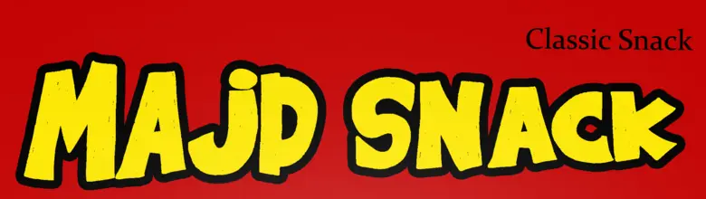
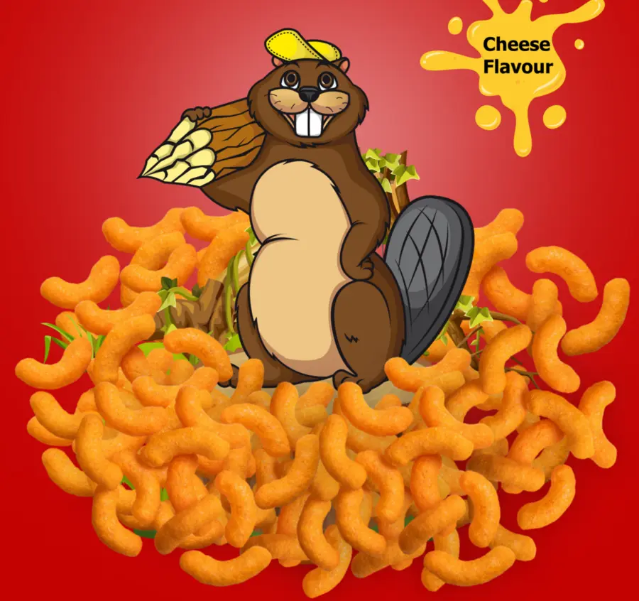
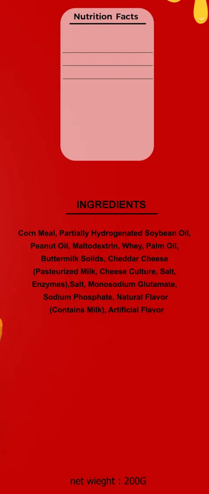
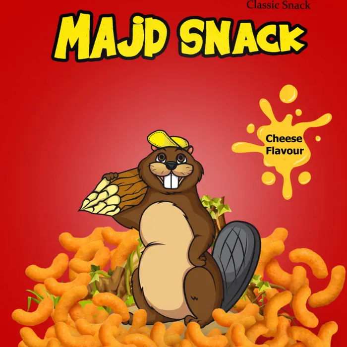
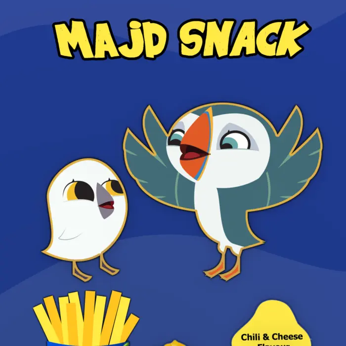

Full design of both bags, including the beaver character
The bag laid flat. The front in the centre, mandatory information on the edges.
Context
A 200 g cheese-flavour corn snack, marked «Made in Kurdistan — Duhok». On the shelf it sits among many colourful bags, so the name and the flavour have to land before the shopper gets close.
Decisions
Red and yellow: the strongest possible contrast between background and logo, and a familiar pairing for cheese snacks.
A hand-drawn logo with a black outline: chunky, irregular letters in a black-and-white outline, so the name stands out even on deep red.
The character on the product: a beaver I drew, sitting on the pile of snacks itself, so the key image shows both product and character.
Flavour as a cheese splash: the «Cheese Flavour» badge is shaped like melted cheese, and similar splashes in the corners repeat the signal.
A clear centre for the image: ingredients, barcode, address and weight live on the edges, away from the front.

The logo and the «Classic Snack» line.The flavour badge.

The character on the product.

The information edge: nutrition, ingredients, weight.
Second flavour / chili & cheese
Same brand, a second flavour.
The chili & cheese bag laid flat.
The logo stays, the background changes: the same yellow MAJD SNACK logo with its black outline, on deep blue instead of red, so both flavours read as one family on the shelf.
Illustration instead of photo: the fries, chillies and cheese are drawn in a flat style that matches the characters, instead of the product photo used on the red bag.
A free-form flavour badge: «Chili & Cheese Flavour» inside a soft yellow shape, answering the cheese splash on the red version.
Information on the edges: nutrition, ingredients and weight on the right as on the red bag, the address on the left, and the barcode moved to the right under the weight.

Cheese.

Chili & cheese.
Limits
These images are from the design files, not photographs of printed bags. The two characters on the chili & cheese bag are from the Puffin Rock series, and their rights belong to their owners.
Have a product that needs packaging?
Send the product type, the size and the languages you need.